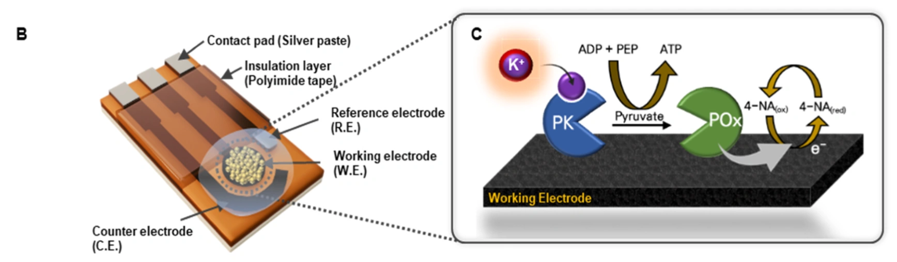
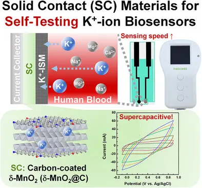
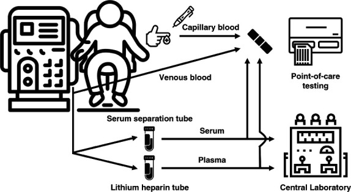

Research
Research Experiences
Electrochemical sensing, electrode interfaces, and clinical evaluation for accessible biochemical measurements.
01 / MEASUREMENT PRINCIPLES
Electrochemical Biosensors
Translating biochemical reactions into quantitative electrical signals
I have developed electrochemical biosensors that convert biochemical reactions and selective ion recognition into measurable current or potential signals. My work has focused on making physiologically relevant measurements more reliable while reducing the steps required at the point of use.
For calibration-free potassium quantification, I developed a potassium-dependent pyruvate kinase/pyruvate oxidase (PK/POx) enzyme cascade on a laser-induced graphene (LIG) electrode. By coupling enzyme activity to a mediator-assisted amperometric readout, this platform enabled potassium measurement without sensor-specific calibration at the time of use. Its analytical performance was evaluated in potassium-spiked human serum.

02 / MATERIALS & INTERFACES
Sensing Materials & Interfaces
Engineering electrode interfaces for reliable sensing
I investigated how electrode architecture and sensing interfaces influence electrochemical performance. My experience includes the fabrication and characterization of porous LIG electrodes, as well as the integration of solid-contact materials into potassium ion-selective sensing strips.
In a collaborative study, I integrated carbon-coated δ-MnO₂ nanosheets into potassium-sensing strips and contributed to their electrochemical evaluation. This work examined the relationship between solid-contact capacitance and sensor response time, demonstrating a faster response than activated-carbon contacts. Together with my LIG research, this work connected the design of electrode materials with practical sensing performance.

03 / CLINICAL TRANSLATION
Point-of-Care Diagnostics
Bringing biochemical measurements closer to clinical use
My research has connected sensor development with analytical and clinical evaluation. I have worked on disposable potassium-sensing strips and portable measurement systems, with an emphasis on reproducibility, practical operation, and agreement with established laboratory methods.
In collaboration with Severance Hospital, I contributed, as co-first author, to the clinical evaluation of a disposable potentiometric test strip in 40 patients undergoing maintenance hemodialysis. The study compared strip measurements across blood sample types, including finger-prick capillary blood, with central laboratory measurements. I am currently working on portable device integration and performance testing to support the translation of sensing technologies into accessible diagnostic tools.
